ボトル(弾) をドロップするmob一覧
一覧ページへ
| 防御骸骨戦士 | アンデット | 一般2 | |||||||
|---|---|---|---|---|---|---|---|---|---|
 | 片手剣(380) | 槍(250) | 弾(380) | 兜・帽子(210) | 槍投擲機(190) | 帰還(150) | クロー(380) | 箒(250) | |
| 大型骸骨 | アンデット | 一般1 | |||||||
 | 鈍器(410) | 両手剣(270) | 弾(410) | 職業鎧(230) | 冠(210) | 能力向上1(160) | 鎌(270) | ||
| デスナイト | アンデット | セミ1 | |||||||
 | 鈍器(390) | 牙(260) | 弾(390) | 鎧(220) | 爪(200) | 能力向上1(160) | 双剣(260) | ||
| スリップワーカー | アンデット | 一般1 | |||||||
 | スリング(410) | ステッキ(270) | 弾(410) | 兜・帽子(230) | 首(210) | ブローチ(120) | |||
| ルナティック | アンデット | 一般2 | |||||||
 | スリング(380) | ステッキ(250) | 弾(380) | 足(210) | 首(190) | ブローチ(130) | |||
| プレーガー | アンデット | 一般3 | |||||||
 | スリング(360) | ステッキ(240) | 弾(360) | 腰(200) | 首(180) | ブローチ(140) | |||
| 鎧霊 | アンデット | 一般3 | |||||||
| 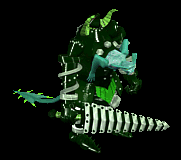 | 弓(360) | 片手剣(240) | 弾(360) | 鎧(200) | 首(180) | 能力向上1(140) | クロー(240) | 銃(360) | |
| 古代ヴァンパイア | アンデット | セミ2 | |||||||
 | 鞭(420) | 牙(280) | 弾(420) | 職業鎧(230) | 指輪(210) | 特殊1(170) | 双剣(280) | ||
| ロバー | 人間 | セミ1 | |||||||
| 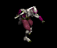 | 投擲(390) | ステッキ(260) | 弾(390) | 職業鎧(220) | 爪(200) | 特殊1(160) | |||
| ストラグラー | 人間 | 一般1 | |||||||
 | 杖(410) | スリング(270) | 弾(410) | 腰(230) | 首(210) | 能力向上2(160) | 本(410) | ||
| ブラックメイジ | 人間 | 一般4 | |||||||
 | 杖(300) | スリング(200) | 弾(300) | グローブ(170) | 爪(150) | 宝石(120) | 本(300) | ||
| ドゥームキャスター | 人間 | ボス1 | |||||||
 | 杖(470) | スリング(310) | 弾(470) | 兜・帽子(260) | 首(240) | 能力向上2(190) | 本(470) | ||
| ダークサマナー | 人間 | 一般2 | |||||||
 | 鞭(380) | 投擲(250) | 弾(380) | 腰(210) | イヤリング(190) | 肩刺青(110) | |||
| レッドアイ所員 | 人間 | 一般3 | |||||||
 | 鞭(360) | 投擲(240) | 弾(360) | 腰(200) | イヤリング(180) | 肩刺青(120) | |||
| 降神術師 | 人間 | セミ2 | |||||||
 | 鞭(420) | スリング(280) | 弾(420) | 腰(230) | イヤリング(210) | 肩刺青(140) | |||
| オーク | 人間 | 一般3 | |||||||
 | 鈍器(360) | 牙(240) | 弾(360) | 足(200) | 冠(180) | 帰還(140) | 双剣(240) | ||
| キクロップス | 人間 | セミ1 | |||||||
 | スリング(390) | 杖(260) | 弾(390) | 足(220) | 爪(200) | 帰還(160) | 本(260) | ||
| チタン | 人間 | ボス1 | |||||||
 | スリング(470) | 杖(310) | 弾(470) | 足(260) | 冠(240) | 帰還(190) | 本(310) | ||
| レッドアイ元帥 | 人間 | ボス2 | |||||||
| 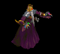 | ステッキ(490) | 笛(330) | 弾(490) | マント(270) | イヤリング(250) | ブローチ(220) | |||
| コボルト | 悪魔 | 一般1 | |||||||
 | 牙(410) | スリング(270) | 弾(410) | 腰(230) | 爪(210) | 肩刺青(120) | 双剣(410) | ||
| グレムリン | 悪魔 | 一般2 | |||||||
 | 牙(380) | スリング(250) | 弾(380) | 腰(210) | 爪(190) | 肩刺青(130) | 双剣(380) | ||
| ゴブリン | 悪魔 | 一般3 | |||||||
| 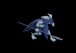 | 牙(360) | スリング(240) | 弾(360) | 腰(200) | 爪(180) | 肩刺青(140) | 双剣(360) | ||
| ファミリア | 悪魔 | 一般4 | |||||||
 | 牙(300) | スリング(200) | 弾(300) | 腰(170) | 爪(150) | 肩刺青(150) | 双剣(300) | ||
| インプ | 悪魔 | セミ1 | |||||||
 | 牙(390) | スリング(260) | 弾(390) | 腰(220) | 爪(200) | 肩刺青(160) | 双剣(390) | ||
| ラットマン | 悪魔 | 一般1 | |||||||
| 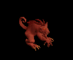 | 投擲(410) | 笛(270) | 弾(410) | 足(230) | 指輪(210) | 帰還(160) | |||
| ラティアン | 悪魔 | 一般3 | |||||||
| 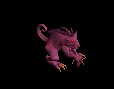 | 投擲(360) | 笛(240) | 弾(360) | 足(200) | 手首(180) | 帰還(140) | |||
| ラットキング | 悪魔 | ボス1 | |||||||
 | 投擲(470) | 笛(310) | 弾(470) | 足(260) | 冠(240) | 能力向上1(190) | |||
| オーガソルジャー | 悪魔 | 一般4 | |||||||
 | 鈍器(300) | スリング(200) | 弾(300) | 鎧(170) | イヤリング(150) | 能力向上1(120) | |||
| ブレイマ | 悪魔 | セミ3 | |||||||
 | 槍(450) | 片手剣(300) | 弾(450) | 職業鎧(250) | 爪(230) | 特殊1(180) | クロー(300) | 箒(450) | |
| 飛海月 | 動物 | 一般1 | |||||||
 | 鞭(410) | スリング(270) | 弾(410) | 腰(230) | 手首(210) | 帰還(160) | |||
| エアスライム | 動物 | 一般2 | |||||||
 | 鞭(380) | スリング(250) | 弾(380) | 腰(210) | イヤリング(190) | 特殊1(150) | |||
| アクアスライム | 動物 | 一般3 | |||||||
 | 鞭(360) | スリング(240) | 弾(360) | 腰(200) | 手首(180) | 帰還(140) | |||
| 水晶烏賊 | 動物 | セミ1 | |||||||
 | 鞭(390) | スリング(260) | 弾(390) | 腰(220) | 手首(200) | 能力向上2(160) | |||
| クラーケン | 動物 | ボス1 | |||||||
 | 鞭(470) | スリング(310) | 弾(470) | 腰(260) | 手首(240) | 帰還(190) | |||
| 大型モグラ | 動物 | 一般3 | |||||||
 | 両手剣(360) | ステッキ(240) | 弾(360) | 職業鎧(200) | 指輪(180) | 能力向上1(140) | 鎌(360) | ||
| ディガー | 動物 | セミ1 | |||||||
 | 弓(390) | スリング(260) | 弾(390) | 職業鎧(220) | 指輪(200) | 能力向上1(160) | 銃(390) | ||
| マインスィーパ | 動物 | セミ2 | |||||||
 | 鞭(420) | 杖(280) | 弾(420) | グローブ(230) | 指輪(210) | 能力向上1(170) | 本(280) | ||
| ロードブローカー | 動物 | ボス1 | |||||||
 | 笛(470) | ステッキ(310) | 弾(470) | 職業鎧(260) | 指輪(240) | 能力向上1(190) | |||
| 防御骸骨戦士Ex | アンデット | 一般2 | |||||||
| 片手剣(380) | 槍(250) | 弾(380) | 兜・帽子(210) | 槍投擲機(190) | 帰還(150) | クロー(380) | 箒(250) | |
| 大型骸骨Ex | アンデット | 一般1 | |||||||
| 鈍器(410) | 両手剣(270) | 弾(410) | 職業鎧(230) | 冠(210) | 能力向上1(160) | 鎌(270) | ||
| デスナイトEx | アンデット | セミ1 | |||||||
| 鈍器(450) | 牙(300) | 弾(450) | 鎧(250) | 爪(230) | 能力向上1(180) | 双剣(300) | ||
| スリップワーカーEx | アンデット | 一般1 | |||||||
| スリング(410) | ステッキ(270) | 弾(410) | 兜・帽子(230) | 首(210) | ブローチ(120) | |||
| ルナティックEx | アンデット | 一般2 | |||||||
| スリング(380) | ステッキ(250) | 弾(380) | 足(210) | 首(190) | ブローチ(130) | |||
| プレーガーEx | アンデット | 一般3 | |||||||
| スリング(360) | ステッキ(240) | 弾(360) | 腰(200) | 首(180) | ブローチ(140) | |||
| 鎧霊Ex | アンデット | 一般3 | |||||||
| 弓(360) | 片手剣(240) | 弾(360) | 鎧(200) | 首(180) | 能力向上1(140) | クロー(240) | 銃(360) | ||
| 古代ヴァンパイアEx | アンデット | セミ2 | |||||||
| 鞭(650) | 牙(430) | 弾(650) | 職業鎧(360) | 指輪(330) | ブローチ(300) | 双剣(430) | ||
| ロバーEx | 人間 | セミ1 | |||||||
| 投擲(450) | ステッキ(300) | 弾(450) | 職業鎧(250) | 爪(230) | 特殊1(180) | ||||
| ストラグラーEx | 人間 | 一般1 | |||||||
| 杖(410) | スリング(270) | 弾(410) | 腰(230) | 首(210) | 能力向上2(160) | 本(410) | ||
| ブラックメイジEx | 人間 | 一般4 | |||||||
| 杖(300) | スリング(200) | 弾(300) | グローブ(170) | 爪(150) | 宝石(120) | 本(300) | ||
| ドゥームキャスターEx | 人間 | ボス1 | |||||||
| 杖(1200) | スリング(800) | 弾(1200) | 兜・帽子(670) | 首(600) | 能力向上2(480) | 本(1200) | ||
| ダークサマナーEx | 人間 | 一般2 | |||||||
| 鞭(380) | 投擲(250) | 弾(380) | 腰(210) | イヤリング(190) | 肩刺青(110) | |||
| レッドアイ所員Ex | 人間 | 一般3 | |||||||
| 鞭(360) | 投擲(240) | 弾(360) | 腰(200) | イヤリング(180) | 肩刺青(120) | |||
| 降神術師Ex | 人間 | セミ2 | |||||||
| 鞭(650) | スリング(430) | 弾(650) | 腰(360) | イヤリング(330) | 肩刺青(140) | |||
| オークEx | 人間 | 一般3 | |||||||
| 鈍器(360) | 牙(240) | 弾(360) | 足(200) | 冠(180) | 帰還(140) | 双剣(240) | ||
| キクロップスEx | 人間 | セミ1 | |||||||
| スリング(450) | 杖(300) | 弾(450) | 足(250) | 爪(230) | 帰還(180) | 本(300) | ||
| チタンEx | 人間 | ボス1 | |||||||
| スリング(1200) | 杖(800) | 弾(1200) | 足(670) | 冠(600) | 帰還(480) | 本(800) | ||
| レッドアイ元帥Ex | 人間 | ボス2 | |||||||
| ステッキ(2000) | 笛(1330) | 弾(2000) | マント(1110) | イヤリング(1000) | ブローチ(220) | ||||
| コボルトEx | 悪魔 | 一般1 | |||||||
| 牙(410) | スリング(270) | 弾(410) | 腰(230) | 爪(210) | 肩刺青(120) | 双剣(410) | ||
| グレムリンEx | 悪魔 | 一般2 | |||||||
| 牙(380) | スリング(250) | 弾(380) | 腰(210) | 爪(190) | 肩刺青(130) | 双剣(380) | ||
| ゴブリンEx | 悪魔 | 一般3 | |||||||
| 牙(360) | スリング(240) | 弾(360) | 腰(200) | 爪(180) | 肩刺青(140) | 双剣(360) | |||
| ファミリアEx | 悪魔 | 一般4 | |||||||
| 牙(300) | スリング(200) | 弾(300) | 腰(170) | 爪(150) | 肩刺青(150) | 双剣(300) | ||
| インプEx | 悪魔 | セミ1 | |||||||
| 牙(450) | スリング(300) | 弾(450) | 腰(250) | 爪(230) | 肩刺青(160) | 双剣(450) | ||
| ラットマンEx | 悪魔 | 一般1 | |||||||
| 投擲(410) | 笛(270) | 弾(410) | 足(230) | 指輪(210) | 帰還(160) | ||||
| ラティアンEx | 悪魔 | 一般3 | |||||||
| 投擲(360) | 笛(240) | 弾(360) | 足(200) | 手首(180) | 帰還(140) | ||||
| ラットキングEx | 悪魔 | ボス1 | |||||||
| 投擲(1200) | 笛(800) | 弾(1200) | 足(670) | 冠(600) | 能力向上1(480) | |||
| オーガソルジャーEx | 悪魔 | 一般4 | |||||||
| 鈍器(300) | スリング(200) | 弾(300) | 鎧(170) | イヤリング(150) | 能力向上1(120) | |||
| ブレイマEx | 悪魔 | セミ3 | |||||||
| 槍(800) | 片手剣(530) | 弾(800) | 職業鎧(440) | 爪(400) | 特殊1(320) | クロー(530) | 箒(800) | |
| 飛海月Ex | 動物 | 一般1 | |||||||
| 鞭(410) | スリング(270) | 弾(410) | 腰(230) | 手首(210) | 帰還(160) | |||
| エアスライムEx | 動物 | 一般2 | |||||||
| 鞭(380) | スリング(250) | 弾(380) | 腰(210) | イヤリング(190) | 特殊1(150) | |||
| アクアスライムEx | 動物 | 一般3 | |||||||
| 鞭(360) | スリング(240) | 弾(360) | 腰(200) | 手首(180) | 帰還(140) | |||
| 水晶烏賊Ex | 動物 | セミ1 | |||||||
| 鞭(450) | スリング(300) | 弾(450) | 腰(250) | 手首(230) | 能力向上2(180) | |||
| クラーケンEx | 動物 | ボス1 | |||||||
| 鞭(1200) | スリング(800) | 弾(1200) | 腰(670) | 手首(600) | 帰還(480) | |||
| 大型モグラEx | 動物 | 一般3 | |||||||
| 両手剣(360) | ステッキ(240) | 弾(360) | 職業鎧(200) | 指輪(180) | 能力向上1(140) | 鎌(360) | ||
| ディガーEx | 動物 | セミ1 | |||||||
| 弓(450) | スリング(300) | 弾(450) | 職業鎧(250) | 指輪(230) | 能力向上1(180) | 銃(450) | ||
| マインスィーパEx | 動物 | セミ2 | |||||||
| 鞭(650) | 杖(430) | 弾(650) | グローブ(360) | 指輪(330) | 能力向上1(260) | 本(430) | ||
| ロードブローカーEx | 動物 | ボス1 | |||||||
| 笛(1200) | ステッキ(800) | 弾(1200) | 職業鎧(670) | 指輪(600) | 能力向上1(480) | |||
| ファイアブロアーEx | 神獣 | 一般1 | |||||||
 | スリング(410) | 牙(270) | 弾(410) | グローブ(230) | 手首(210) | 能力向上2(160) | 双剣(410) | ||
| フーフーEx | 神獣 | 一般2 | |||||||
 | スリング(380) | 杖(250) | 弾(380) | グローブ(210) | 手首(190) | 能力向上2(150) | 本(250) | ||
| ブレイジャーEx | 神獣 | 一般3 | |||||||
 | スリング(360) | 牙(240) | 弾(360) | グローブ(200) | 手首(180) | 能力向上2(140) | 双剣(240) | ||
| 炎鬼Ex | 神獣 | セミ1 | |||||||
 | スリング(450) | 杖(300) | 弾(450) | グローブ(250) | 手首(230) | 能力向上2(180) | 本(300) | ||
| 火炎悪魔Ex | 神獣 | ボス1 | |||||||
 | スリング(1200) | 牙(800) | 弾(1200) | グローブ(670) | 手首(600) | 能力向上2(480) | 双剣(800) | ||
| ビビッドブラックEx | 神獣 | ボス3 | |||||||
 | スリング(2800) | 翼(1870) | 弾(2800) | 兜・帽子(1560) | イヤリング(1400) | 特殊1(1120) | 水晶(1870) | ||
| 防御骸骨戦士Zin | アンデット | 一般2 | |||||||
| 片手剣(1380) | 槍(920) | 弾(1380) | 兜・帽子(770) | 槍投擲機(690) | 帰還(550) | クロー(1380) | 箒(920) | |
| 大型骸骨Zin | アンデット | 一般1 | |||||||
| 鈍器(1210) | 両手剣(810) | 弾(1210) | 職業鎧(670) | 冠(610) | 能力向上1(480) | 鎌(810) | ||
| デスナイトZin | アンデット | セミ1 | |||||||
| 鈍器(650) | 牙(430) | 弾(650) | 鎧(360) | 爪(330) | 能力向上1(260) | 双剣(430) | ||
| スリップワーカーZin | アンデット | 一般1 | |||||||
| スリング(1210) | ステッキ(810) | 弾(1210) | 兜・帽子(670) | 首(610) | ブローチ(120) | |||
| ルナティックZin | アンデット | 一般2 | |||||||
| スリング(1380) | ステッキ(920) | 弾(1380) | 足(770) | 首(690) | ブローチ(130) | |||
| プレーガーZin | アンデット | 一般3 | |||||||
| スリング(1560) | ステッキ(1040) | 弾(1560) | 腰(870) | 首(780) | ブローチ(140) | |||
| 鎧霊Zin | アンデット | 一般3 | |||||||
| 弓(1560) | 片手剣(1040) | 弾(1560) | 鎧(870) | 首(780) | 能力向上1(620) | クロー(1040) | 銃(1560) | ||
| 古代ヴァンパイアZin | アンデット | セミ2 | |||||||
| 鞭(750) | 牙(500) | 弾(750) | 職業鎧(420) | 指輪(380) | ブローチ(300) | 双剣(500) | ||
| ロバーZin | 人間 | セミ1 | |||||||
| 投擲(650) | ステッキ(430) | 弾(650) | 職業鎧(360) | 爪(330) | 特殊1(260) | ||||
| ストラグラーZin | 人間 | 一般1 | |||||||
| 杖(1210) | スリング(810) | 弾(1210) | 腰(670) | 首(610) | 能力向上2(480) | 本(1210) | ||
| ブラックメイジZin | 人間 | 一般4 | |||||||
| 杖(1200) | スリング(800) | 弾(1200) | グローブ(670) | 爪(600) | 宝石(480) | 本(1200) | ||
| ドゥームキャスターZin | 人間 | ボス1 | |||||||
| 杖(1000) | スリング(670) | 弾(1000) | 兜・帽子(560) | 首(500) | 能力向上2(400) | 本(1000) | ||
| ダークサマナーZin | 人間 | 一般2 | |||||||
| 鞭(1380) | 投擲(920) | 弾(1380) | 腰(770) | イヤリング(690) | 肩刺青(110) | |||
| レッドアイ所員Zin | 人間 | 一般3 | |||||||
| 鞭(1560) | 投擲(1040) | 弾(1560) | 腰(870) | イヤリング(780) | 肩刺青(120) | |||
| 降神術師Zin | 人間 | セミ2 | |||||||
| 鞭(750) | スリング(500) | 弾(750) | 腰(420) | イヤリング(380) | 肩刺青(140) | |||
| オークZin | 人間 | 一般3 | |||||||
| 鈍器(1560) | 牙(1040) | 弾(1560) | 足(870) | 冠(780) | 帰還(620) | 双剣(1040) | ||
| キクロップスZin | 人間 | セミ1 | |||||||
| スリング(650) | 杖(430) | 弾(650) | 足(360) | 爪(330) | 帰還(260) | 本(430) | ||
| チタンZin | 人間 | ボス1 | |||||||
| スリング(1000) | 杖(670) | 弾(1000) | 足(560) | 冠(500) | 帰還(400) | 本(670) | ||
| レッドアイ元帥Zin | 人間 | ボス2 | |||||||
| ステッキ(1100) | 笛(730) | 弾(1100) | マント(610) | イヤリング(550) | ブローチ(220) | ||||
| コボルトZin | 悪魔 | 一般1 | |||||||
| 牙(1210) | スリング(810) | 弾(1210) | 腰(670) | 爪(610) | 肩刺青(120) | 双剣(1210) | ||
| グレムリンZin | 悪魔 | 一般2 | |||||||
| 牙(1380) | スリング(920) | 弾(1380) | 腰(770) | 爪(690) | 肩刺青(130) | 双剣(1380) | ||
| ゴブリンZin | 悪魔 | 一般3 | |||||||
| 牙(1560) | スリング(1040) | 弾(1560) | 腰(870) | 爪(780) | 肩刺青(140) | 双剣(1560) | |||
| ファミリアZin | 悪魔 | 一般4 | |||||||
| 牙(1200) | スリング(800) | 弾(1200) | 腰(670) | 爪(600) | 肩刺青(150) | 双剣(1200) | ||
| インプZin | 悪魔 | セミ1 | |||||||
| 牙(650) | スリング(430) | 弾(650) | 腰(360) | 爪(330) | 肩刺青(160) | 双剣(650) | ||
| ラットマンZin | 悪魔 | 一般1 | |||||||
| 投擲(1210) | 笛(810) | 弾(1210) | 足(670) | 指輪(610) | 帰還(480) | ||||
| ラティアンZin | 悪魔 | 一般3 | |||||||
| 投擲(1560) | 笛(1040) | 弾(1560) | 足(870) | 手首(780) | 帰還(620) | ||||
| ラットキングZin | 悪魔 | ボス1 | |||||||
| 投擲(1000) | 笛(670) | 弾(1000) | 足(560) | 冠(500) | 能力向上1(400) | |||
| オーガソルジャーZin | 悪魔 | 一般4 | |||||||
| 鈍器(1200) | スリング(800) | 弾(1200) | 鎧(670) | イヤリング(600) | 能力向上1(480) | |||
| ブレイマZin | 悪魔 | セミ3 | |||||||
| 槍(900) | 片手剣(600) | 弾(900) | 職業鎧(500) | 爪(450) | 特殊1(360) | クロー(600) | 箒(900) | |
| 飛海月Zin | 動物 | 一般1 | |||||||
| 鞭(1210) | スリング(810) | 弾(1210) | 腰(670) | 手首(610) | 帰還(480) | |||
| エアスライムZin | 動物 | 一般2 | |||||||
| 鞭(1380) | スリング(920) | 弾(1380) | 腰(770) | イヤリング(690) | 特殊1(550) | |||
| アクアスライムZin | 動物 | 一般3 | |||||||
| 鞭(1560) | スリング(1040) | 弾(1560) | 腰(870) | 手首(780) | 帰還(620) | |||
| 水晶烏賊Zin | 動物 | セミ1 | |||||||
| 鞭(650) | スリング(430) | 弾(650) | 腰(360) | 手首(330) | 能力向上2(260) | |||
| クラーケンZin | 動物 | ボス1 | |||||||
| 鞭(1000) | スリング(670) | 弾(1000) | 腰(560) | 手首(500) | 帰還(400) | |||
| 大型モグラZin | 動物 | 一般3 | |||||||
| 両手剣(1560) | ステッキ(1040) | 弾(1560) | 職業鎧(870) | 指輪(780) | 能力向上1(620) | 鎌(1560) | ||
| ディガーZin | 動物 | セミ1 | |||||||
| 弓(650) | スリング(430) | 弾(650) | 職業鎧(360) | 指輪(330) | 能力向上1(260) | 銃(650) | ||
| マインスィーパZin | 動物 | セミ2 | |||||||
| 鞭(750) | 杖(500) | 弾(750) | グローブ(420) | 指輪(380) | 能力向上1(300) | 本(500) | ||
| ロードブローカーZin | 動物 | ボス1 | |||||||
| 笛(1000) | ステッキ(670) | 弾(1000) | 職業鎧(560) | 指輪(500) | 能力向上1(400) | |||
| ファイアブロアーZin | 神獣 | 一般1 | |||||||
| スリング(1210) | 牙(810) | 弾(1210) | グローブ(670) | 手首(610) | 能力向上2(480) | 双剣(810) | ||
| フーフーZin | 神獣 | 一般2 | |||||||
| スリング(1380) | 杖(920) | 弾(1380) | グローブ(770) | 手首(690) | 能力向上2(550) | 本(920) | ||
| ブレイジャーZin | 神獣 | 一般3 | |||||||
| スリング(1560) | 牙(1040) | 弾(1560) | グローブ(870) | 手首(780) | 能力向上2(620) | 双剣(1040) | ||
| 炎鬼Zin | 神獣 | セミ1 | |||||||
| スリング(650) | 杖(430) | 弾(650) | グローブ(360) | 手首(330) | 能力向上2(260) | 本(430) | ||
| 火炎悪魔Zin | 神獣 | ボス1 | |||||||
| スリング(1000) | 牙(670) | 弾(1000) | グローブ(560) | 手首(500) | 能力向上2(400) | 双剣(670) | ||
| ビビッドブラックZin | 神獣 | ボス3 | |||||||
| スリング(1200) | 翼(800) | 弾(1200) | 兜・帽子(670) | イヤリング(600) | 特殊1(480) | 水晶(800) | ||
| アンデッド魔法師2 Zin | アンデット | セミ1 | |||||||
 | 鍵(50) | マント(90) | 弾(160) | 手首(230) | 肩刺青(300) | グローブ(350) | |||
| アンデッド魔法師4 Zin | アンデット | ボス1 | |||||||
 | 指輪(150) | 状態異常回復2(250) | 弾(450) | 手首(650) | 矢(850) | グローブ(1000) | 魔弾(850) | ||
| アンデッドライト Zin | アンデット | 一般4 | |||||||
 | 指輪(30) | マント(50) | 弾(90) | 手首(130) | 状態異常回復1(170) | 宝石(200) | |||
| アンデッドライト2 Zin | アンデット | セミ2 | |||||||
 | 指輪(80) | マント(140) | 弾(250) | 手首(360) | 矢(470) | グローブ(550) | 魔弾(470) | ||
| アンデッドライト4 Zin | アンデット | ボス2 | |||||||
 | 指輪(270) | マント(450) | 弾(810) | 手首(1170) | 矢(1530) | グローブ(1800) | 魔弾(1530) | ||
| アンデッドメイジ Zin | アンデット | 一般4 | |||||||
 | 指輪(30) | マント(50) | 弾(90) | 手首(130) | 矢(170) | HP回復(200) | 魔弾(170) | ||
| アンデッドメイジ2 Zin | アンデット | セミ3 | |||||||
 | 鍵(110) | マント(180) | 弾(320) | 手首(460) | 矢(600) | グローブ(700) | 魔弾(600) | ||
| アンデッドメイジ4 Zin | アンデット | ボス3 | |||||||
 | 指輪(360) | マント(600) | 弾(1080) | 手首(1560) | 肩刺青(2040) | グローブ(2400) | |||
| アンデッドロック Zin | アンデット | 一般4 | |||||||
| 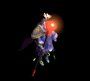 | 鍵(30) | 状態異常回復2(50) | 弾(90) | 手首(130) | 矢(170) | HP回復(200) | 魔弾(170) | ||
| アンデッドロック2 Zin | アンデット | ボス1 | |||||||
 | 指輪(150) | マント(250) | 弾(450) | マント(650) | 状態異常回復1(850) | イベント(1000) | |||
| エルフガーディア3 Zin | 人間 | ボス2 | |||||||
 | 片手剣(450) | イヤリング(1350) | 弾(900) | 能力向上1(720) | 肩刺青(180) | 職業鎧(270) | クロー(450) | ||
| シーク信者(踊り子) Zin | 人間 | 一般3 | |||||||
 | 鎧(70) | ブローチ(200) | 弾(130) | 十字架(100) | 腰(30) | 翼(40) | 水晶(40) | ||
| 逃亡魔法師3 Zin | 人間 | セミ2 | |||||||
 | 鍵(140) | 弾(410) | 両手剣(280) | 能力向上1(220) | 肩刺青(60) | グローブ(80) | 鎌(280) | ||
| 脱獄犯2 Zin | 人間 | セミ3 | |||||||
| 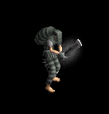 | 投擲(180) | 宝石(530) | 両手剣(350) | 槍(280) | 弾(70) | HP回復(110) | 鎌(350) | 箒(280) | |
| サキュバス Zin | 悪魔 | 一般4 | |||||||
 | 鎧(130) | ブローチ(160) | 弾(70) | 笛(40) | ステッキ(20) | HP回復(10) | |||
| カマキリ戦士 Zin | 悪魔 | セミ2 | |||||||
 | 宝石(360) | 宝石(440) | 弾(180) | 能力向上1(110) | 腰(60) | 翼(30) | 水晶(30) | ||
| カマキリ戦士2 Zin | 悪魔 | ボス1 | |||||||
 | 鍵(650) | 鈍器(800) | 弾(330) | 槍(200) | 腰(100) | イベント(50) | 箒(200) | ||
| ペンティライダー Zin | 悪魔 | セミ1 | |||||||
 | 鍵(230) | 弾(280) | 腕刺青(120) | 槍(70) | 状態異常回復1(40) | 翼(20) | 箒(70) | 水晶(20) | |
| ペンティライダー1 Zin | 悪魔 | セミ2 | |||||||
 | 投擲(360) | 鈍器(440) | 弾(180) | 槍(110) | 腰(60) | 翼(30) | 箒(110) | 水晶(30) | |
| ペンティライダー4 Zin | 悪魔 | ボス3 | |||||||
 | 投擲(1560) | 鈍器(1920) | 弾(790) | 槍(480) | 両手剣(240) | 翼(120) | 鎌(240) | 箒(480) | 水晶(120) |
| バッタ悪魔1 Zin | 悪魔 | セミ1 | |||||||
| 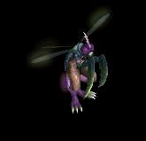 | 能力向上2(230) | CP回復(280) | 弾(120) | 槍(70) | 状態異常回復1(40) | 翼(20) | 箒(70) | 水晶(20) | |
| バッタ悪魔3 Zin | 悪魔 | ボス1 | |||||||
| 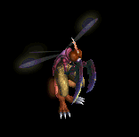 | 宝石(650) | 鈍器(800) | 弾(330) | 能力向上1(200) | 腰(100) | 翼(50) | 水晶(50) | ||
| パンプキンヘッド3 Zin | 悪魔 | ボス1 | |||||||
 | 指輪(650) | 弾(800) | 腕刺青(330) | 十字架(200) | 腰(100) | HP回復(50) | |||
| ジャックランタン2 Zin | 悪魔 | ボス1 | |||||||
 | 指輪(650) | 首(800) | 弾(330) | 能力向上1(200) | 肩刺青(100) | グローブ(50) | |||
| ジャックランタン4 Zin | 悪魔 | ボス3 | |||||||
 | 指輪(1560) | 弾(1920) | 足(790) | マント(480) | 腰(240) | グローブ(120) | |||
| エルダーパンプキン Zin | 悪魔 | セミ2 | |||||||
 | 指輪(360) | 首(440) | 弾(180) | 十字架(110) | 腰(60) | HP回復(30) | |||
| 蛙 Zin | 動物 | 一般4 | |||||||
 | 鍵(70) | ブローチ(50) | 弾(40) | 槍(30) | 槍投擲機(20) | 杖(10) | 本(10) | 箒(30) | |
| ラジエータカエル2 Zin | 動物 | ボス1 | |||||||
 | 投擲(350) | 爪(250) | 弾(200) | 十字架(150) | 状態異常回復1(100) | イベント(50) | |||
| ラジエータカメ4 Zin | 動物 | ボス3 | |||||||
 | 杖(840) | 鈍器(600) | 弾(480) | 十字架(360) | 弓(240) | 盾(120) | 本(840) | 銃(240) | |
| ダークバッファロ1 Zin | 神獣 | セミ1 | |||||||
 | 指輪(160) | ブローチ(230) | 弾(120) | 鞭(20) | 腕刺青(40) | 兜・帽子(90) | |||
| ダークバッファロ3 Zin | 神獣 | ボス1 | |||||||
| 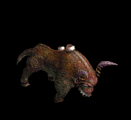 | 指輪(450) | 爪(650) | 弾(350) | 十字架(50) | 肩刺青(100) | 兜・帽子(250) | |||
| ダークバッファロ4 Zin | 神獣 | ボス2 | |||||||
 | 指輪(810) | ブローチ(1170) | 弾(630) | 鞭(90) | 腰(180) | 兜・帽子(450) | |||
| 赤パネルバッファ Zin | 神獣 | 一般4 | |||||||
 | 指輪(90) | 状態異常回復2(130) | 弾(70) | 鞭(10) | 肩刺青(20) | HP回復(50) | |||
| 赤パネルバッファ1 Zin | 神獣 | セミ2 | |||||||
 | 指輪(250) | 爪(360) | 弾(190) | 能力向上1(30) | 腰(60) | 兜・帽子(140) | |||
| 赤パネルバッファ3 Zin | 神獣 | ボス2 | |||||||
 | 指輪(810) | ブローチ(1170) | 弾(630) | 鞭(90) | 腰(180) | 兜・帽子(450) | |||
| エメラルドバッファ Zin | 神獣 | セミ1 | |||||||
 | 指輪(160) | ブローチ(230) | 弾(120) | 鞭(20) | 腰(40) | 兜・帽子(90) | |||
| エメラルドバッファ1 Zin | 神獣 | セミ2 | |||||||
 | 指輪(250) | 爪(360) | 弾(190) | 十字架(30) | 能力向上2(60) | イベント(140) | |||
| エメラルドバッファ2 Zin | 神獣 | セミ3 | |||||||
| 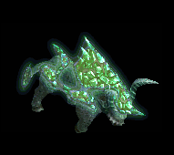 | 指輪(320) | 爪(460) | 弾(250) | 鞭(40) | 腰(70) | 兜・帽子(180) | |||
| エメラルドバッファ4 Zin | 神獣 | ボス3 | |||||||
| 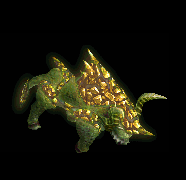 | 指輪(1080) | 爪(1560) | 弾(840) | 鞭(120) | 腰(240) | HP回復(600) | |||
| 堕天使3 Zin | 神獣 | ボス2 | |||||||
 | 鍵(810) | イヤリング(1170) | 弾(630) | 手首(90) | ステッキ(180) | イベント(450) | |||
| イーグルヘッド Zin | 神獣 | 一般4 | |||||||
 | 投擲(90) | 弾(130) | 足(70) | 手首(10) | ステッキ(20) | 宝石(50) | |||
| 泥棒 | 人間 | 一般1 | |||||||
| 杖(410) | スリング(270) | 弾(410) | 腰(230) | 首(210) | 能力向上2(160) | 本(410) | ||
| 黒魔術師 | 人間 | 一般4 | |||||||
| 杖(300) | スリング(200) | 弾(300) | グローブ(170) | 爪(150) | 宝石(120) | 本(300) | ||
| 破壊術師 | 人間 | ボス1 | |||||||
| 杖(470) | スリング(310) | 弾(470) | 兜・帽子(260) | 首(240) | 能力向上2(190) | 本(470) | ||
| 泥棒 Ex | 人間 | 一般1 | |||||||
| 杖(410) | スリング(270) | 弾(410) | 腰(230) | 首(210) | 能力向上2(160) | 本(410) | ||
| 黒魔術師 Ex | 人間 | 一般4 | |||||||
| 杖(300) | スリング(200) | 弾(300) | グローブ(170) | 爪(150) | 宝石(120) | 本(300) | ||
| 破壊術師 Ex | 人間 | ボス1 | |||||||
| 杖(1200) | スリング(800) | 弾(1200) | 兜・帽子(670) | 首(600) | 能力向上2(480) | 本(1200) | ||
| レッドアイ議長 | 人間 | ボス2 | |||||||
| ステッキ(490) | 笛(330) | 弾(490) | マント(270) | イヤリング(250) | ブローチ(220) | ||||
| レッドアイ議長 Ex | 人間 | ボス2 | |||||||
| ステッキ(2000) | 笛(1330) | 弾(2000) | マント(1110) | イヤリング(1000) | ブローチ(220) | ||||
| 深淵の強者 Ex | 神獣 | ボス3 | |||||||
| スリング(2800) | 翼(1870) | 弾(2800) | 兜・帽子(1560) | イヤリング(1400) | 特殊1(1120) | 水晶(1870) | ||
| ヴァンパイア伯爵 | アンデット | セミ2 | |||||||
| 鞭(420) | 牙(280) | 弾(420) | 職業鎧(230) | 指輪(210) | 特殊1(170) | 双剣(280) | ||
| ヴァンパイア伯爵 Ex | アンデット | セミ2 | |||||||
| 鞭(650) | 牙(430) | 弾(650) | 職業鎧(360) | 指輪(330) | ブローチ(300) | 双剣(430) | ||
| ゼリーフィッシュ | 動物 | 一般1 | |||||||
| 鞭(410) | スリング(270) | 弾(410) | 腰(230) | 手首(210) | 帰還(160) | |||
| スライム | 動物 | 一般2 | |||||||
| 鞭(380) | スリング(250) | 弾(380) | 腰(210) | イヤリング(190) | 特殊1(150) | |||
| オーカーゼリー | 動物 | 一般3 | |||||||
| 鞭(360) | スリング(240) | 弾(360) | 腰(200) | 手首(180) | 帰還(140) | |||
| クリスタルイカ | 動物 | セミ1 | |||||||
| 鞭(390) | スリング(260) | 弾(390) | 腰(220) | 手首(200) | 能力向上2(160) | |||
| ダイオウイカ | 動物 | ボス1 | |||||||
| 鞭(470) | スリング(310) | 弾(470) | 腰(260) | 手首(240) | 帰還(190) | |||
| ゼリーフィッシュ Ex | 動物 | 一般1 | |||||||
| 鞭(410) | スリング(270) | 弾(410) | 腰(230) | 手首(210) | 帰還(160) | |||
| スライム Ex | 動物 | 一般2 | |||||||
| 鞭(380) | スリング(250) | 弾(380) | 腰(210) | イヤリング(190) | 特殊1(150) | |||
| オーカーゼリー Ex | 動物 | 一般3 | |||||||
| 鞭(360) | スリング(240) | 弾(360) | 腰(200) | 手首(180) | 帰還(140) | |||
| クリスタルイカ Ex | 動物 | セミ1 | |||||||
| 鞭(450) | スリング(300) | 弾(450) | 腰(250) | 手首(230) | 能力向上2(180) | |||
| ダイオウイカ Ex | 動物 | ボス1 | |||||||
| 鞭(1200) | スリング(800) | 弾(1200) | 腰(670) | 手首(600) | 帰還(480) | |||
| デーモン将軍 | 悪魔 | セミ3 | |||||||
| 槍(450) | 片手剣(300) | 弾(450) | 職業鎧(250) | 爪(230) | 特殊1(180) | クロー(300) | 箒(450) | |
| デーモン将軍 Ex | 悪魔 | セミ3 | |||||||
| 槍(800) | 片手剣(530) | 弾(800) | 職業鎧(440) | 爪(400) | 特殊1(320) | クロー(530) | 箒(800) | |
| 時の旅人 Zin | 人間 | 一般4 | |||||||
| 鎧(70) | ブローチ(200) | 弾(130) | 十字架(100) | 腰(30) | 翼(40) | 水晶(40) | ||
| サキュバス Zin | 悪魔 | 一般4 | |||||||
| 鎧(130) | ブローチ(160) | 弾(70) | 笛(40) | ステッキ(20) | HP回復(10) | |||
| かまいたち Zin | 悪魔 | 一般4 | |||||||
| 宝石(360) | 宝石(440) | 弾(180) | 能力向上1(110) | 腰(60) | 翼(30) | 水晶(30) | ||
| フロッグ Zin | 動物 | 一般4 | |||||||
| 鍵(70) | ブローチ(50) | 弾(40) | 槍(30) | 槍投擲機(20) | 杖(10) | 本(10) | 箒(30) | |
| グリフォン Zin | 神獣 | 一般4 | |||||||
| 投擲(90) | 弾(130) | 足(70) | 手首(10) | ステッキ(20) | 宝石(50) | |||
| サキュバス Zin | 悪魔 | 一般4 | |||||||
| 鎧(130) | ブローチ(160) | 弾(70) | 笛(40) | ステッキ(20) | HP回復(10) | |||
| かまいたち Zin | 悪魔 | 一般4 | |||||||
| 宝石(360) | 宝石(440) | 弾(180) | 能力向上1(110) | 腰(60) | 翼(30) | 水晶(30) | ||
| フロッグ Zin | 動物 | 一般4 | |||||||
| 鍵(70) | ブローチ(50) | 弾(40) | 槍(30) | 槍投擲機(20) | 杖(10) | 本(10) | 箒(30) | |
| グリフォン Zin | 神獣 | 一般4 | |||||||
| 投擲(90) | 弾(130) | 足(70) | 手首(10) | ステッキ(20) | 宝石(50) | |||
| 時の旅人 Zin | 人間 | 一般4 | |||||||
| 鎧(70) | ブローチ(200) | 弾(130) | 十字架(100) | 腰(30) | 翼(40) | 水晶(40) | ||
| スイッチモグラZin | 動物 | ボス1 | |||||||
| 笛(1000) | ステッキ(670) | 弾(1000) | 職業鎧(560) | 指輪(500) | 能力向上1(400) | |||
| 大型モグラEv | 動物 | 一般3 | |||||||
| 両手剣(1560) | ステッキ(1040) | 弾(1560) | 職業鎧(870) | 指輪(780) | 能力向上1(620) | 鎌(1560) | ||
| 鎧霊Ev | アンデット | 一般3 | |||||||
| 弓(1560) | 片手剣(1040) | 弾(1560) | 鎧(870) | 首(780) | 能力向上1(620) | クロー(1040) | 銃(1560) | ||
| 巨人骸骨Ev | 人間 | 一般3 | |||||||
| 鈍器(1560) | 牙(1040) | 弾(1560) | 足(870) | 冠(780) | 帰還(620) | 双剣(1040) | ||
| プレーガーEv | アンデット | 一般3 | |||||||
| スリング(1560) | ステッキ(1040) | 弾(1560) | 腰(870) | 首(780) | ブローチ(140) | |||
| レッドアイ所員Ev | 人間 | 一般3 | |||||||
| 鞭(1560) | 投擲(1040) | 弾(1560) | 腰(870) | イヤリング(780) | 肩刺青(120) | |||
| ゴブリンEv | 悪魔 | 一般3 | |||||||
| 牙(1560) | スリング(1040) | 弾(1560) | 腰(870) | 爪(780) | 肩刺青(140) | 双剣(1560) | |||
| ラティアンEv | 悪魔 | 一般3 | |||||||
| 投擲(1560) | 笛(1040) | 弾(1560) | 足(870) | 手首(780) | 帰還(620) | ||||
| ブレイジャーEv | 神獣 | 一般3 | |||||||
| スリング(1560) | 牙(1040) | 弾(1560) | グローブ(870) | 手首(780) | 能力向上2(620) | 双剣(1040) | ||
| アクアスライムEv | 動物 | 一般3 | |||||||
| 鞭(1560) | スリング(1040) | 弾(1560) | 腰(870) | 手首(780) | 帰還(620) | |||
| ブラックメイジEv | 人間 | 一般4 | |||||||
| 杖(1200) | スリング(800) | 弾(1200) | グローブ(670) | 爪(600) | 宝石(480) | 本(1200) | ||
| ファミリアEv | 悪魔 | 一般4 | |||||||
| 牙(1200) | スリング(800) | 弾(1200) | 腰(670) | 爪(600) | 肩刺青(150) | 双剣(1200) | ||
| オーガソルジャーEv | 悪魔 | 一般4 | |||||||
| 鈍器(1200) | スリング(800) | 弾(1200) | 鎧(670) | イヤリング(600) | 能力向上1(480) | |||
| キクロップスEv | 人間 | セミ1 | |||||||
| スリング(650) | 杖(430) | 弾(650) | 足(360) | 爪(330) | 帰還(260) | 本(430) | ||
| マインスィーパEv | 動物 | セミ2 | |||||||
| 鞭(750) | 杖(500) | 弾(750) | グローブ(420) | 指輪(380) | 能力向上1(300) | 本(500) | ||
| 古代ヴァンパイアEv | アンデット | セミ2 | |||||||
| 鞭(750) | 牙(500) | 弾(750) | 職業鎧(420) | 指輪(380) | ブローチ(300) | 双剣(500) | ||
| 火炎悪魔Ev | 神獣 | ボス1 | |||||||
| スリング(1000) | 牙(670) | 弾(1000) | グローブ(560) | 手首(500) | 能力向上2(400) | 双剣(670) | ||
| サキュバスSp | 悪魔 | セミ1 | |||||||
 | 鎧(1200) | ブローチ(500) | 弾(700) | 笛(600) | 職業鎧(500) | HP回復(100) | |||
| エアスライムSp | 動物 | 一般4 | |||||||
| 鞭(1300) | スリング(900) | 弾(1400) | 腰(700) | イヤリング(700) | 特殊1(600) | |||
| アクアスライムSp | 動物 | 一般4 | |||||||
| 鞭(1500) | スリング(1000) | 弾(1600) | 腰(900) | 手首(800) | 帰還(600) | |||
| クラーケンSp | 動物 | 一般4 | |||||||
| 鞭(1000) | スリング(670) | 弾(1000) | 腰(560) | 手首(500) | 帰還(400) | |||
| インプSp | 悪魔 | 一般4 | |||||||
| 牙(1200) | スリング(700) | 弾(600) | 腰(400) | 爪(300) | 肩刺青(700) | 双剣(1200) | ||
| サキュバス3 Sp | 悪魔 | セミ1 | |||||||
 | 鎧(1200) | ブローチ(500) | 弾(700) | 笛(600) | 職業鎧(500) | HP回復(100) | |||
| スリップワーカーSp | アンデット | 一般4 | |||||||
| スリング(1200) | 弾(800) | ステッキ(1200) | 兜・帽子(700) | 首(600) | ブローチ(100) | |||
| 覚醒サキュバスZin | 悪魔 | セミ1 | |||||||
 | 鎧(130) | ブローチ(160) | 弾(70) | 笛(40) | ステッキ(20) | HP回復(10) | |||
| 踊り子 Sp | 人間 | 一般4 | |||||||
 | 鎧(70) | ブローチ(200) | 弾(130) | 十字架(100) | 腰(30) | 翼(40) | 水晶(40) |